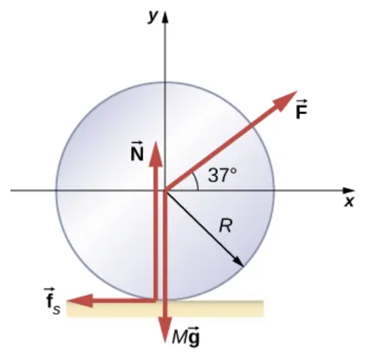
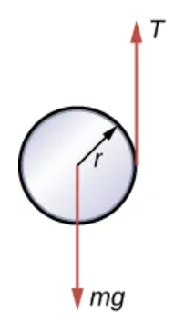

A2.x Problems#
Problem A2.1
A 2.0 kg solid sphere with radius of 0.25 m is released from rest on a ramp inclined 12\(^\circ\). The heigh above the horizontal surface is 3.5 m.
What is the linear acceleration of the CM of the sphere?
What is the angular acceleration of the CM of the sphere?
What is the linear speed of the sphere at the bottom of the ramp?
How many revolutions did the sphere perform before getting to the bottom?
Show code cell source
import sympy as sym
import numpy as np
M = 2.0
R = 0.25
angle = (12.0)*(np.pi/180.0)
h = 3.5
g = 9.81
#------------
# PART 1
#------------
#N2 linear
# x positive down the ramp: from N2: Fg*sin(angle) - Ff = M*ax
Ax = sym.Symbol('Ax') #CM linear acceleration
Ff = sym.Symbol('Ff') #friction force (static)
Fg = M*g
Ffx = -Ff
Eq1 = M*Ax - Fg*np.sin(angle) - Ffx
# N2 rotational
# +z is out of the plane if x is to the right and down the incline
A_theta = sym.Symbol('A_theta') #angular acceleration
I = (2.0/5.0)*M*R**2
Tfz = -R*Ff
Eq2 = I*A_theta - Tfz
#equation of constraint: Ax = -R*A_theta. (negative due to our choice of frame)
Eq3 = Ax + R*A_theta
sol1 = sym.solve((Eq1,Eq2,Eq3),(Ax,Ff,A_theta))
Ax = float(sol1[Ax])
print('Linear acceleration: '+str(Ax)+' m/s^2')
# -----
# PART 2
# -----
Alpha = Ax/R
print('Angular acceleration: '+str(Alpha)+' rad/s^2')
# -----
# PART 3
# -----
#constant acceleration, so can use derived equations from kinematics
v0 = 0
dx = h/np.sin(angle)
v = np.sqrt(v0**2 + 2*dx*Ax)
print('Linear speed: '+str(v)+' m/s')
# -----
# PART 3
# -----
#constant acceleration, so can use derived equations from kinematics
w0 = 0.0
w = v/R
dtheta = (w**2 - w0**2)/(2*Alpha) #in radians
dtheta = dtheta*(1./(2*np.pi)) # in revolutions
print('Revolutions: '+str(dtheta)+' rev')
Show code cell output
Linear acceleration: 1.456866919230157 m/s^2
Angular acceleration: 5.827467676920628 rad/s^2
Linear speed: 7.003570517957253 m/s
Revolutions: 10.716901942948414 rev
Problem A2.2
What is the moment of inertia of an object that rolls without slipping down a 2.00 m high incline starting from rest, and has a final velocity of 6.00 m/s? Express the moment of inertia as a multiple of \(MR^2\), where \(M\) is the mass of the object and \(R\) is its radius.
This problem is a slightly modified version from OpenStax. Access for free at https://openstax.org/books/college-physics-2e/pages/10-problems-exercises
Problem A2.3
Consider two cylinders that start down identical inclines from rest except that one is frictionless. Thus one cylinder rolls without slipping, while the other slides frictionlessly without rolling. They both travel a short distance at the bottom and then start up another incline.
Show that they both reach the same height on the other incline, and that this height is equal to their original height.
Find the ratio of the time the rolling cylinder takes to reach the height on the second incline to the time the sliding cylinder takes to reach the height on the second incline.
Explain why the time for the rolling motion is greater than that for the sliding motion.
This problem is a slightly modified version from OpenStax. Access for free at https://openstax.org/books/college-physics-2e/pages/10-problems-exercises
Problem A2.4
A bowling ball rolls up a ramp 0.5 m high without slipping to storage. It has an initial velocity of its center of mass of 3.0 m/s.
What is its velocity at the top of the ramp?
If the ramp is 1 m high does it make it to the top?
This problem is a slightly modified version from OpenStax. Access for free at https://openstax.org/books/university-physics-volume-1/pages/11-problems
Problem A2.5
A 40.0-kg solid cylinder is rolling across a horizontal surface at a speed of 6.0 m/s. How much work is required to stop it?
This problem is a slightly modified version from OpenStax. Access for free at https://openstax.org/books/university-physics-volume-1/pages/11-problems
Problem A2.6
A solid cylinder rolls up an incline at an angle of 20\(^\circ\). If it starts at the bottom with a speed of 10 m/s, how far up the incline does it travel?
This problem is a slightly modified version from OpenStax. Access for free at https://openstax.org/books/university-physics-volume-1/pages/11-problems
Problem A2.7
A solid cylindrical wheel of mass M and radius R is pulled by a force \(\vec{F}\) applied to the center of the wheel at \(37^\circ\) to the horizontal (see the following figure). If the wheel is to roll without slipping, what is the maximum value of \(F\)? The coefficients of static and kinetic friction are \(\mu_s = 0.40\) and \(\mu_k = 0.30\)
This problem is a slightly modified version from OpenStax. Access for free at https://openstax.org/books/university-physics-volume-1/pages/11-problems
Problem A2.8
A hollow cylinder that is rolling without slipping is given a velocity of 5.0 m/s and rolls up an incline to a vertical height of 1.0 m. If a hollow sphere of the same mass and radius is given the same initial velocity, how high vertically does it roll up the incline?
This problem is a slightly modified version from OpenStax. Access for free at https://openstax.org/books/university-physics-volume-1/pages/11-problems
Problem A2.9
A yo-yo can be thought of a solid cylinder of mass m and radius r that has a light string wrapped around its circumference (see below). One end of the string is held fixed in space. If the cylinder falls as the string unwinds without slipping, what is the acceleration of the cylinder?
This problem is a slightly modified version from OpenStax. Access for free at https://openstax.org/books/university-physics-volume-1/pages/11-problems